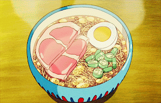

Ponyo's Ramen

Steamy ramen noodles with chopped green onions and protein.
Ingredients
- Thick sliced ham
- Fresh green onion stalks
- Eggs
- Ramen noodles
Preparation
- Boil eggs and peel shell when done
- Chop green onions into thin slices
- Cut thick slices of ham to fit in bowl
- In a bowl layer dry ramen noodles and prepared ingredients on top.
- Add boiling water to bowl covering all ingredients and cover for 3-5 minutes.
Enjoy!